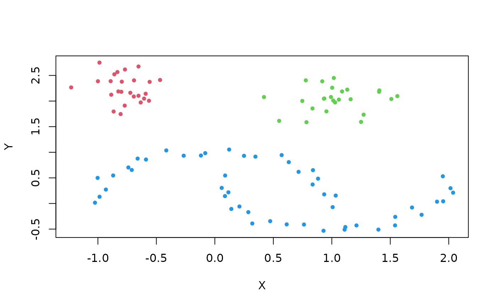
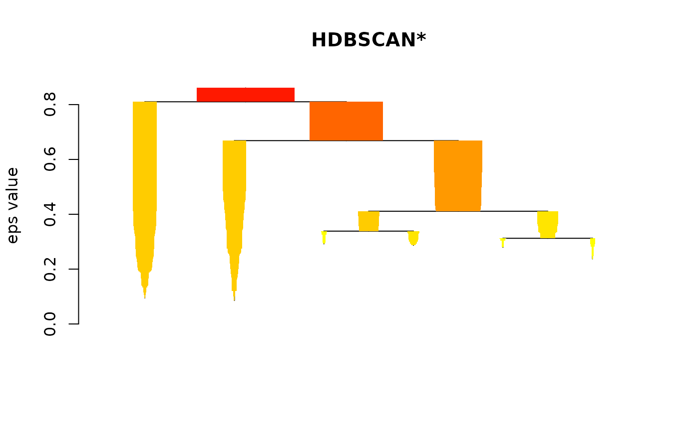
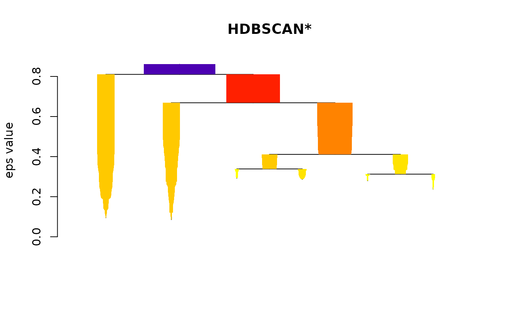
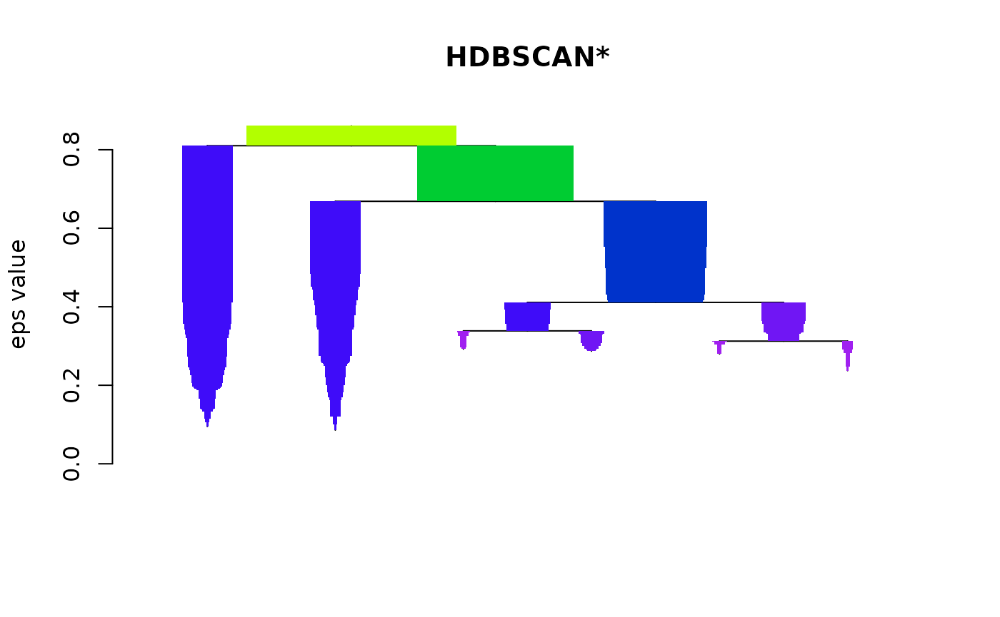
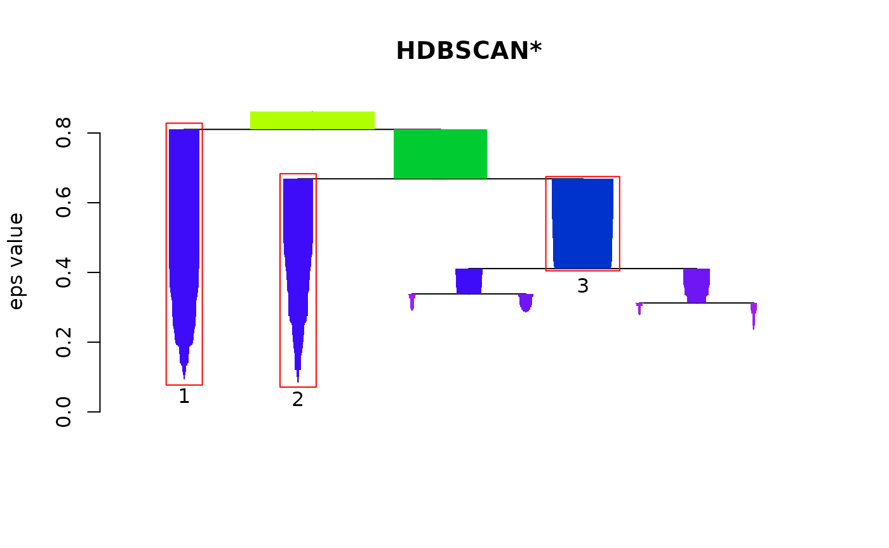
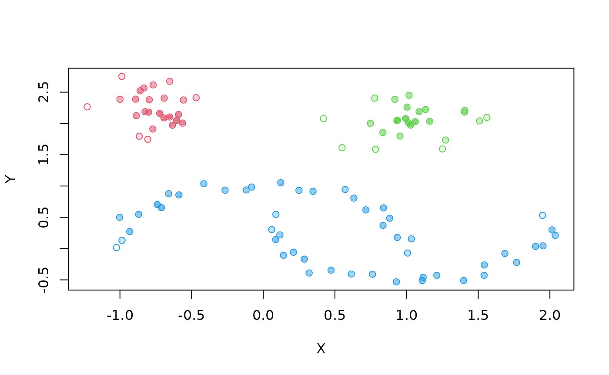
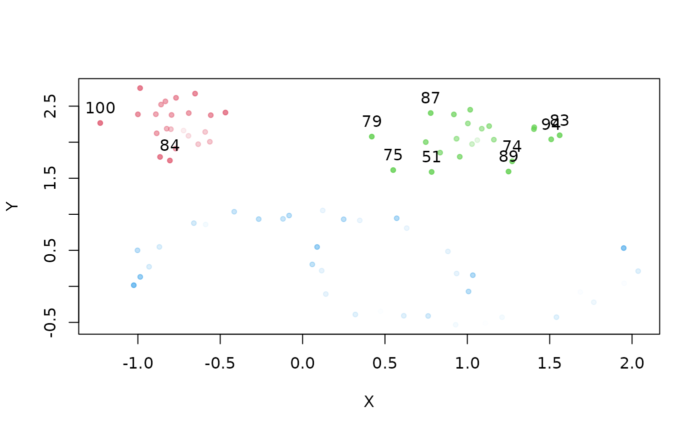
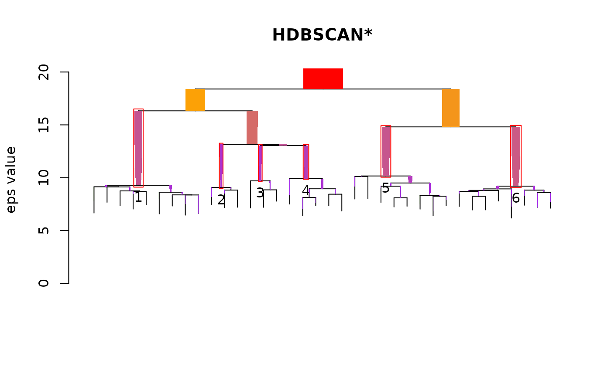

Using Hierarchical DBSCAN (HDBSCAN)
Matt Piekenbrock, Michael Hahsler
Source:vignettes/hdbscan.Rmd
hdbscan.RmdThe dbscan package [6] provides a fast implementation of Hierarchical DBSCAN (HDBSCAN) and related algorithms for R. Nearest-neighbor searches use k-d trees, and for data matrices the minimum spanning tree (MST) is computed with Prim’s algorithm without materializing the full distance matrix. This vignette introduces the corresponding interface. For an introduction to the concepts of the algorithm, see the HDBSCAN documentation of the Python library hdbscan. We use the same sample dataset as that documentation:
##
## Attaching package: 'dbscan'## The following object is masked from 'package:stats':
##
## as.dendrogramTo run HDBSCAN, pass the data and the single parameter
minPts to hdbscan().
cl <- hdbscan(moons, minPts = 5)
cl## HDBSCAN clustering for 100 objects.
## Parameters: minPts = 5
## The clustering contains 3 cluster(s) and 0 noise points.
##
## 1 2 3
## 25 25 50
##
## Available fields: cluster, minPts, coredist, cluster_scores,
## membership_prob, outlier_scores, hcThe flat clustering is stored in the cluster component.
Noise points are assigned the cluster id 0, so we add 1 to obtain valid
color indices.
plot(moons, col=cl$cluster+1, pch=20)
The clustering recovers the intuitive, arbitrarily shaped groups in the data.
The HDBSCAN* Hierarchy
The hdbscan object contains a hierarchical
representation of all DBSCAN* clusterings for the given
minPts. The hierarchy is stored in the hc
component as an hclust object (see
stats::hclust()).
cl$hc##
## Call:
## mst_mrdist(x = x, minPts = minPts, coredist = coredist)
##
## Cluster method : robust single
## Distance : mutual reachability (euclidean)
## Number of objects: 100The object can be used with functions that accept hclust
objects. Note, however, that the hierarchy is a single-linkage hierarchy
under the mutual reachability distance (see [3]), which
stats::hclust() does not provide as a linkage method. It is
called the “HDBSCAN* hierarchy” in [3, 4] and can be visualized with the
plot method for hclust objects from the stats package:
plot(cl$hc, main="HDBSCAN* Hierarchy")DBSCAN* vs. Cutting the HDBSCAN* Hierarchy
A global cut of the HDBSCAN* hierarchy at height \(\varepsilon\) is equivalent to running
DBSCAN* (DBSCAN [1] without border points) with \(\varepsilon\) and the same \(minPts\). We can verify this empirically.
stats::cutree() does not label singletons as noise, so the
function below assigns noise (cluster id 0) to all points whose core
distance exceeds \(\varepsilon\). The
clusterings are then compared across all cut heights.
cl <- hdbscan(moons, minPts = 5)
check <- rep(FALSE, nrow(moons)-1)
core_dist <- kNNdist(moons, k=5-1)
## cutree doesn't distinguish noise as 0, so we make a new method to do it manually
cut_tree <- function(hcl, eps, core_dist){
cuts <- unname(cutree(hcl, h=eps))
cuts[which(core_dist > eps)] <- 0 # Use core distance to distinguish noise
cuts
}
eps_values <- sort(cl$hc$height, decreasing = TRUE)+.Machine$double.eps ## Machine eps for consistency between cuts
for (i in 1:length(eps_values)) {
cut_cl <- cut_tree(cl$hc, eps_values[i], core_dist)
dbscan_cl <- dbscan(moons, eps = eps_values[i], minPts = 5, borderPoints = FALSE) # DBSCAN* doesn't include border points
## Use run length encoding as an ID-independent way to check ordering
check[i] <- (all.equal(rle(cut_cl)$lengths, rle(dbscan_cl$cluster)$lengths) == "TRUE")
}
print(all(check == TRUE))## [1] TRUESimplified Cluster Tree
The full HDBSCAN* hierarchy becomes unwieldy for larger datasets
because every observation is a leaf. The plot() method for
hdbscan objects instead shows the simplified (condensed)
cluster tree (see [3, 4]), which displays cluster-wide
changes over all values of \(\varepsilon\). It is the default
visualization:
plot(cl)
The color gradient can be changed,

the widths scaled to the output device,

and the clusters selected for the flat solution (those with maximal stability [2]) can be outlined:

Cluster Stability Scores
The stability scores are indexed by the cluster labels of the
condensed tree. These labels differ from the cluster ids in the
cluster component. The scores are the stability values
before the bottom-up traversal of the tree that updates them
based on the stability of the child clusters.
print(cl$cluster_scores)## 1 2 3
## 110.70613 90.86559 45.62762The membership “probabilities” of the individual points are stored in
membership_prob. They are derived from the core distances
and are not probabilities in a statistical sense.
head(cl$membership_prob)## [1] 0.4354753 0.2893287 0.4778663 0.4035933 0.4574012 0.4904582They can be used to visualize the degree of cluster membership, for example, by mapping it to the transparency of the points.
plot(moons, col=cl$cluster+1, pch=21)
colors <- mapply(function(col, i) adjustcolor(col, alpha.f = cl$membership_prob[i]),
palette()[cl$cluster+1], seq_along(cl$cluster))
points(moons, col=colors, pch=20)
Global-Local Outlier Score from Hierarchies
The Global-Local Outlier Score from Hierarchies (GLOSH) [4] assigns
an outlier score to each point based on both local and global
properties of the hierarchy. The scores are available in the
outlier_scores component. In the plot below, the opacity of
a point represents its outlier score, and the ten points with the
highest scores are labeled.
Note: GLOSH is computed from the hierarchy. It is not simply the complement of the membership probabilities, which are based on the core distances of the points within the selected clusters. Noise points (points not assigned to any cluster) are taken into account in the definition of an outlier.
top_outliers <- order(cl$outlier_scores, decreasing = TRUE)[1:10]
colors <- mapply(function(col, i) adjustcolor(col, alpha.f = cl$outlier_scores[i]),
palette()[cl$cluster+1], seq_along(cl$cluster))
plot(moons, col=colors, pch=20)
text(moons[top_outliers, ], labels = top_outliers, pos=3)
A Larger Example
A larger dataset illustrates the advantages of HDBSCAN more clearly.
The DS3 dataset was published as a benchmark for the
Chameleon clustering algorithm [5]. Its shapes are easy to identify
visually, but many clustering algorithms fail to recover them.
With minPts = 25, HDBSCAN finds the 6 clusters in the
data:
cl2 <- hdbscan(DS3, minPts = 25)
cl2## HDBSCAN clustering for 8000 objects.
## Parameters: minPts = 25
## The clustering contains 6 cluster(s) and 814 noise points.
##
## 0 1 2 3 4 5 6
## 814 1585 618 614 924 1656 1789
##
## Available fields: cluster, minPts, coredist, cluster_scores,
## membership_prob, outlier_scores, hcAs before, we mark noise points and map the membership probabilities to opacity.
plot(DS3, col=cl2$cluster+1,
pch=ifelse(cl2$cluster == 0, 8, 1), # Mark noise as star
cex=ifelse(cl2$cluster == 0, 0.5, 0.75), # Decrease size of noise
xlab=NA, ylab=NA)
colors <- sapply(1:length(cl2$cluster),
function(i) adjustcolor(palette()[(cl2$cluster+1)[i]], alpha.f = cl2$membership_prob[i]))
points(DS3, col=colors, pch=20)The simplified cluster tree is particularly useful for larger datasets:

Performance
The computationally intensive steps of HDBSCAN are implemented in C++
using Rcpp. Core distances are computed with a k-d tree based
k-nearest-neighbor search. For a data matrix, hdbscan()
then constructs the MST of the mutual reachability graph with Prim’s
algorithm and computes the (Euclidean) mutual reachability distances on
the fly (see mst_mrdist()). The \(n \times n\) distance matrix is never
stored, so memory use is \(O(nd)\) for
\(n\) points in \(d\) dimensions. The running time is still
quadratic in \(n\).
If a dist object is supplied instead of a data matrix,
its distances are used directly. This supports other distance measures,
but requires \(O(n^2)\) memory.
References
- Martin Ester, Hans-Peter Kriegel, Joerg Sander, Xiaowei Xu (1996). A Density-Based Algorithm for Discovering Clusters in Large Spatial Databases with Noise. Institute for Computer Science, University of Munich. Proceedings of 2nd International Conference on Knowledge Discovery and Data Mining (KDD-96).
- Campello, Ricardo JGB, Davoud Moulavi, Arthur Zimek, and Jörg Sander. “A framework for semi-supervised and unsupervised optimal extraction of clusters from hierarchies.” Data Mining and Knowledge Discovery 27, no. 3 (2013): 344-371.
- Campello, Ricardo JGB, Davoud Moulavi, and Joerg Sander. “Density-based clustering based on hierarchical density estimates.” In Pacific-Asia Conference on Knowledge Discovery and Data Mining, pp. 160-172. Springer Berlin Heidelberg, 2013.
- Campello, Ricardo JGB, Davoud Moulavi, Arthur Zimek, and Jörg Sander. “Hierarchical density estimates for data clustering, visualization, and outlier detection.” ACM Transactions on Knowledge Discovery from Data (TKDD) 10, no. 1 (2015): 5.
- Karypis, George, Eui-Hong Han, and Vipin Kumar. “Chameleon: Hierarchical clustering using dynamic modeling.” Computer 32, no. 8 (1999): 68-75.
- Hahsler M, Piekenbrock M, Doran D (2019). “dbscan: Fast Density-Based Clustering with R.” Journal of Statistical Software, 91(1), 1-30. doi: 10.18637/jss.v091.i01